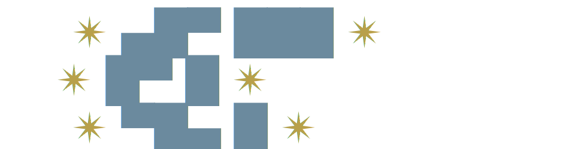

Claude Threads
Bring Claude Code to your team
Run Claude Code locally, share it live in Mattermost or Slack.
Think of it as screen-sharing for AI pair programming, but everyone can type.
Features
Real-time Streaming
Claude's responses stream live to your chat as they're generated
Multi-Platform
Works with both Mattermost and Slack out of the box
Team Collaboration
Invite teammates with !invite, approve actions via emoji reactions
Concurrent Sessions
Each thread gets its own isolated Claude session
Session Persistence
Sessions survive bot restarts and can be resumed
Git Worktrees
Isolate changes in separate branches automatically
Interactive Permissions
Approve Claude's actions with emoji reactions
Image Attachments
Attach images for Claude to analyze in context
Quick Start
bun install -g claude-threads
1
Install globally with Bun
2
Run claude-threads in your project directory
3
Follow the interactive setup to connect your chat platform